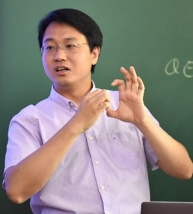

翟荟 教授
报告题目：Quantum Information Scrambling and Quantum Neural Network
报告摘要：In this talk, I will discuss the connection between the concept of quantum information scrambling and quantum neural networks. I will discuss how to use the quantum information scrambling to understand the learning dynamics and to select the optimal architecture for quantum neural networks.
专家简介：清华大学高等研究院教授，教育部长江特聘教授，国家自然科学基金委杰出青年基金获得者。主要从事冷原子物理、凝聚态理论等量子物质的研究，以及机器学习和物理学的结合。2019年获中国物理学会饶毓泰奖。